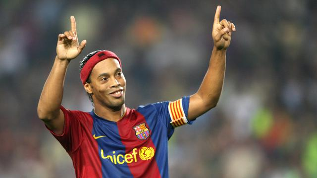

Camp Nou
Camp Nou adalah stadion sepak bola di Barcelona, Catalunya. Stadion ini mulai dibuka tahun 1957. Kapasitasnya adalah 99.354 kursi dan merupakan kandang dari FC Barcelona.

Xavier Hernández Creus, lebih dikenal sebagai Xavi, adalah seorang manajer dan mantan pemain sepak bola profesional Spanyol yang saat ini menjadi manajer klub La Liga Barcelona.
Camp Nou adalah stadion sepak bola di Barcelona, Catalunya. Stadion ini mulai dibuka tahun 1957. Kapasitasnya adalah 99.354 kursi dan merupakan kandang dari FC Barcelona.
Diego Armando Maradona merupakan salah satu pemain terbaik yang pernah bermain di Barcelona dengan nomor 10 miliknya di Barcelona serta, Argentina.
Messi seakan merupakan pemain kental bersama Barcelona. Sejak kecil ia sudah terlahir untuk mengenakan jersey Blaugrana hingga saat ini. Messi sudah bersama Barcelona kurang lebih 17 tahun dan melekat dalam jatuh bangunnya Barcelona.
Ronaldinho merupakan pemain ikonik yang mampu membuat seluruh fans jatuh cinta dengan permainan melegendanya bahkan jika Anda merupakan fans Real Madrid sekalipun.
